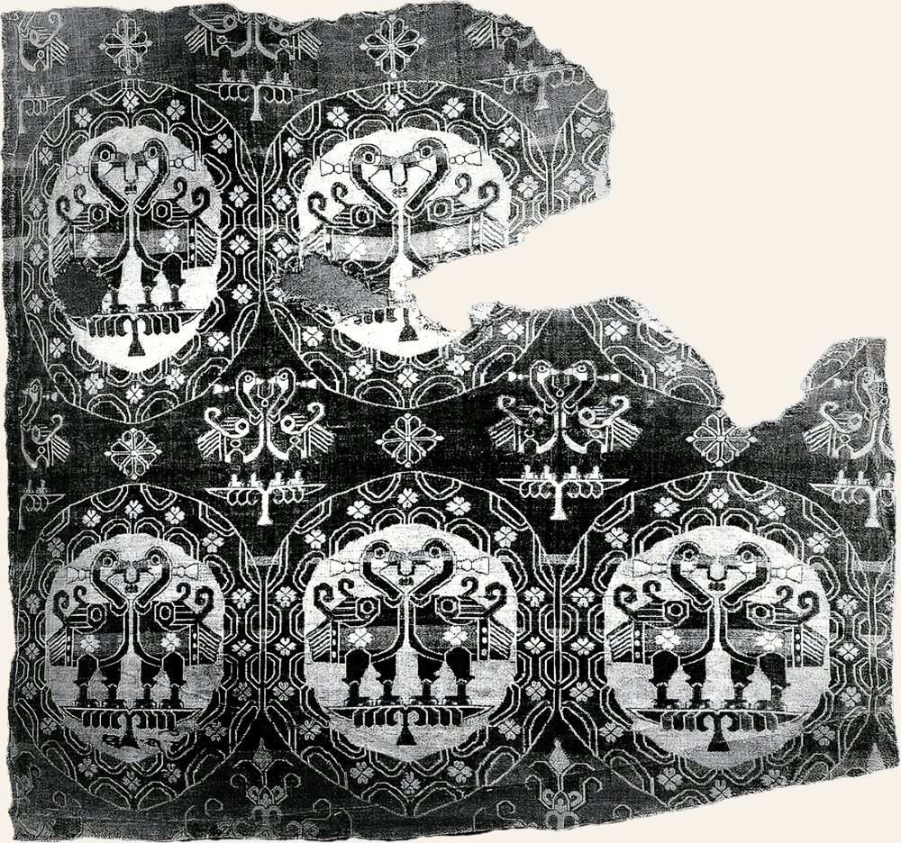

ESSAY TITLE

One or two italic sentences that introduce the essay.
This is placeholder prose. Replace it with your own writing; paragraphs, headings, quotes and images all pick up the site's styling automatically.
Long essays benefit from a generous measure and a calm rhythm. The body column is kept to roughly forty rem so lines stay comfortable to read on any screen.
A second paragraph gives the drop cap and spacing something to show off. Add a footnote like this1 whenever you need one.
- Replace with your own source or note. ↩